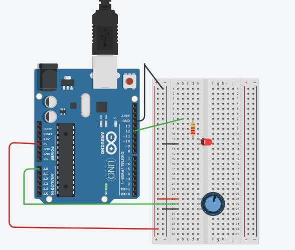

<!DOCTYPE html>
<html lang="pt-BR">
<head>
    <meta charset="UTF-8">
    <meta name="viewport" content="width=device-width, initial-scale=1.0">
    <title>arduino</title>
</head>
<body>
  <link rel="stylesheet" href="style.css">  
</body>
</html>
<nav>
    <a href="./index.html">-Página principal-</a>
    <a href="./Tinkercad.html">Tinkercad-</a>
    <a href="./c++.html">Pagina C++-</a>
    <a href="./java.html">Java-</a>
</nav>
<h1>o que é a plataforma ARDUÍNO e o um microcontrolador ATMEL ARDUÍNO.
</h1>
<p>Arduino é uma plataforma que possibilita o desenvolvimento de projetos eletrônicos. Em outras palavras, é uma plataforma de prototipagem eletrônica. O Arduino é constituído de hardware e software, tornando assim possível a realização de diversos projetos tecnológicos.
    A placa tem como principal componente o microcontrolador, que é um tipo de processador bem menor do que o convencional.A placa arduino Uno é equipada com o microcontrolador ATmega320, originalmente produzido pela Atmel, agora parte da microchip </p>
    <br>
    <p>imagem de um arduino em funcionamento</p>
    <div>
        
    </div>
    <br>
    <p>um código de arduino em C++</p>
    <div>
        
    </div>